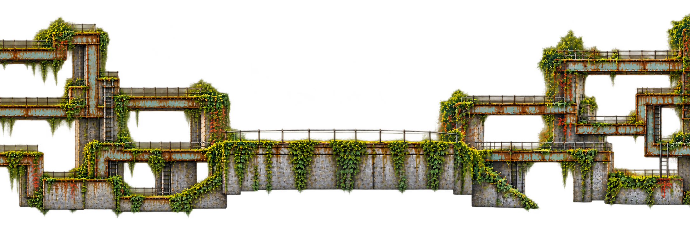
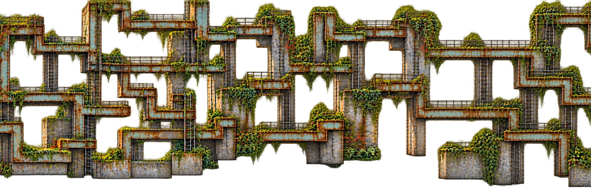

Current combined viewer: photographic creek → substantial maze, three banners and seven center plates →
Current traversal correction · 23 October · review candidate
Big structures. Tall shafts. A path worth finding.
The preferred broad riveted maze is back. Actual seam patches replace bounded pixels in each layer; this is not a translucent window laid over the clean background. Pan through both joins and switch before/after.
Loading source panels and repair candidates…
Code invariant passed: two layers, two joins each; zero changed RGBA pixels outside copied repair bands. One canonical 2160×720 panel size.
Still a visual candidate: alpha fringes and repair-edge mismatches remain. Platform connectivity, playable scale, full depth recomposition and real reflections are not approved or implemented.
The two repair candidates for the maze
Left–center context

Only its central 512-pixel band is copied back. The outer artwork remains from the original source plates.
Center–right context

Alpha is replaced too, so a repair can remove an old edge. A newly generated window is not pasted in its entirety.
Extend without flattening the world model
Ordered chunk IDs supply every layer, water mask and chunk-local anchor. Add at either end or insert in the middle, then prepare a new version. The same join operation applies to each depth plate. Capture reflections from current approved layers, rather than baking a fixed maze into the water sprite.